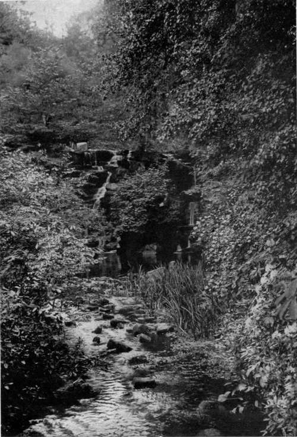
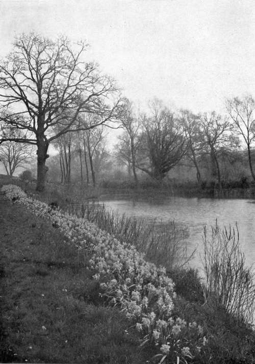

Water Gardens. Continued
Description
This section is from the book "What England Can Teach Us About Gardening", by Wilhelm Miller. Also available from Amazon: What England Can Teach Us About Gardening.
Water Gardens. Continued
A beginner nearly always rejects native material, because he sees no point in cultivating what grows wild all about him. Yet the longer he lives the surer he is to give up most of the European material, concentrate on American plants, and use the Japanese for spice. The native material grows better, costs less to maintain, and is more appropriate. To use the plants of a different climate is to fight nature, and lose; to grow the plants of our own and allied climates is to harness nature's forces. This Kew picture is better than a comparable scene in America, because there is more luxuriance; and we can never get the utmost luxuriance unless we make native plants dominant. Yet I must say that it would hardly do to reproduce this Kew landscape in America. In the North it would suggest mosquitoes, malaria, and snakes; in the South it would be stuffy or even steaming. It is not too luxuriant, but it needs open spaces. In a hot climate like ours we must look out for a free circulation of air, whereas in a cool climate, like England's, coziness is a main consideration. Now coziness comes from dense masses of upright vegetation which ward off harsh winds, while airiness comes from low, rounded masses of vegetation, and occasional wide openings to encourage air currents. I think the degree of openness shown in Mr. Robinson's water garden is better suited to American estates than the scene at Kew.
VIRGINIA WATER. AMERICA HAS THOUSANDS OF NATURAL CASCADES, THE BEAUTY OF WHICH WE CAN ENHANCE BY PLANTING; PLACING THE STONES AND CREATING A PICTURE LIKE THIS WOULD BE DIFFICULT AND COSTLY.
Broadly speaking, we Americans do not know how to treat the margins of water, especially when we use concrete. We leave a hard line of it exposed, as if the important thing were to advertise the cost. And we have thousands upon ten thousands of grassy banks devoid of vegetation that are as ugly as sin compared with the beauty we might have. I speak strongly, because it will be a complete surprise to many of my readers to hear that a grassy bank can be anything but beautiful.*England can teach us that the best way to do is to fringe nearly all the margin with water-loving plants. Of course, I would determine the open spaces first. I would provide first for bathing, boat houses, piers, and other utilities, and then for air currents. But everywhere else I should hide the margin. There should be every degree of overhang from trees and shrubs, partly for the comfort that shade gives, and partly because of the charm of foliage as reflected in water, for the best place in the world to study texture is there. Contrast any American watering-place you know with the illustrations in this chapter and you will see that marginal planting offers a new world of beauty. Will you please note that at Gravetye and Kew there is no sharp distinction between land and water. Some plants stand in one element, some in the other, and both overlap, as they do in nature. Willows grow on land, but their expression is watery; rushes grow in water, but they are makers of land. Would you rather have no vegetation on the banks? Or would you rather see a great colony of cardinal flowers reflected in the water; Lilium superbum growing eight feet high, and bearing thirty flowers on a stem; a thousand Japanese iris, with flowers nine inches across, and of many colours; tall yellow iris flashing in the sun; countless spires of purple loosestrife pointing to the sky; banks of violets and carpets of forget-me-nots?
The most striking plant for marginal planting is the Gunnera, which often has leaves six feet across. I heard one man boast of Gunnera leaves eleven feet across! (See plate 97.) This is the only important water-garden effect we cannot have. The nearest approach to it for us is that of the ornamental rhubarbs, some of which have leaves three or four feet across, and are very striking when in flower.
The ideas here proposed need not conflict at all with any commercial or pleasant ways of using water, e. g., for fishing, house boats, growing water-cress, trout culture, or ornamental fowl of any kind. On the contrary, no landscape gardening is any good that does not provide for use first and beauty afterward. Mr. Robinson complains about the "wretched duck ponds" which, he says, disfigure England; but are we not more guilty? Why is it that so many Americans who love animals care so little for plants? I do not find this so in England. Yet for every kind of fish or water-fowl that we keep in these palpably artificial ponds there is some plant that should be naturalized in the water or on the margin, because it will cut down the cost of maintenance by furnishing natural food or shelter. A few colonies of plants founded on the life histories of the birds or fish would take away the curse of artificiality, and give the best kind of beauty — that which grows out of use.
EMPEROR DAFFODILS ON THE BANK OF A WATER-LILY POOL AT GRAVETYE. NEXT THE WATER IS A LINE OF PURPLE LOOSE-STRIFE (Lylhrum Salicaria) WHICH MAKES GLORIOUS COLOUR MASSES IN SUMMER. ENGLISH OAKS IN THE BACKGROUND. See page 56.
In order to realize what glorious opportunites we have for water gardening, give one glance at any good map of the United States that shows what a magnificently watered country we have east of the Mississippi. In my experience, it is hard to go a mile in any direction without meeting some interesting bit of water. Add to this our natural climatic advantage over Europe in water-lilies, and the chance we have for working out an American style of water gardening becomes apparent. The way is even blazed for us, because we have two beautiful American books on water gardening*, which are both inspiring and practical. The wealthy collector will find a mine of delight in the coloured plates of Professor Conard's wonderful monograph on water-lilies, published by the Carnegie Institute.
On the whole, I should not be surprised if water gardening has the brightest future of any of the twelve most important types of gardening. It is not so long ago that we had no hardy water-lilies in yellow or red. Before I die I expect to see the gorgeous blues of the tropics transferred to water-lilies that may stay outdoors in the North the year round, and last as long as trees.
"Water Gardening" by Peter Bisset, and "Water-lilies and How to Grow Them" by Conard and Hus.
Continue to:
Tags
garden, flowers, plants, England, effects, foliage, gardening